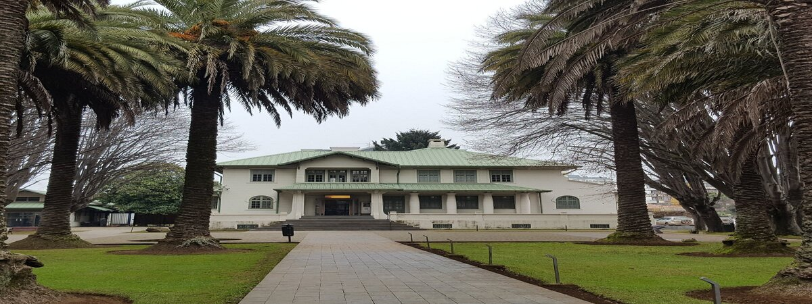
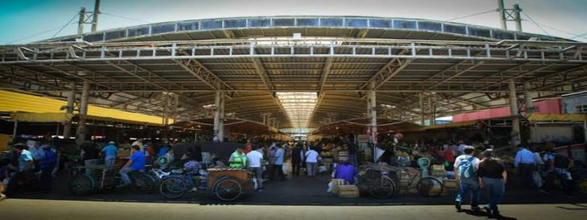

Sendero Ñielol
Naturaleza • Parque Ñielol, Temuco
Duración: 2 hrs · Dificultad: Fácil
EcoRuta Temuco
Turismo sustentable • Temuco
Encuentra rutas, actividades y emprendimientos locales con información clara sobre ubicación, accesibilidad, horarios y contacto.
Acceso libre · No necesitas crear una cuenta
Naturaleza • Parque Ñielol, Temuco
Duración: 2 hrs · Dificultad: Fácil

Cultura • Museo Regional de La Araucanía
Duración: 1-2 hrs · Dificultad: Facil

Gastronomía • Plaza Aníbal Pinto
Duración: 4 hrs · Dificultad: Muy fácil